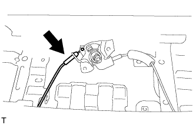
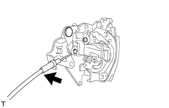
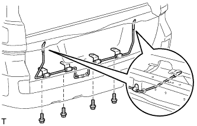
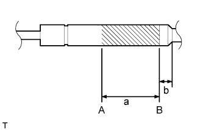
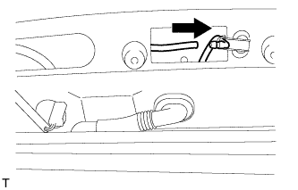
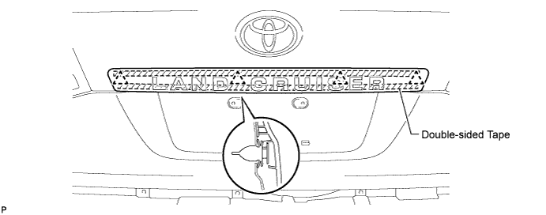
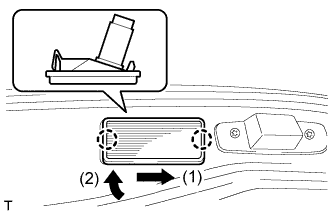

BACK DOOR > REASSEMBLY |
| 1. INSTALL TAIL GATE STAY SUB-ASSEMBLY LH |
Clean the threaded surface on the vehicle body with a non-residue solvent.
Apply adhesive to the threads of the screws.
 |
Using a T40 "TORX" wrench, install the 2 screws and tail gate stay.
| 2. INSTALL TAIL GATE STAY SUB-ASSEMBLY RH |
| 3. INSTALL LOWER TAIL GATE LOCK ASSEMBLY LH |
 |
Using a T30 "TORX" wrench, install the 3 screws and lower tail gate lock.
| 4. INSTALL BACK DOOR REMOTE CONTROL ASSEMBLY |
 |
Connect the left side cable.
 |
Install the 2 screws.
| 5. INSTALL LOWER TAIL GATE LOCK ASSEMBLY RH |
 |
Connect the cable to the lower tail gate lock.
 |
Using a T30 "TORX" wrench, install the 3 screws and lower tail gate lock.
| 6. INSTALL BACK DOOR INSIDE HANDLE ASSEMBLY |
 |
Install the back door handle grommet.
Install the screw and back door inside handle.
| 7. INSTALL BACK DOOR TORSION BAR GUIDE |
 |
Attach the 2 claws to install the back door torsion bar guide.
| 8. INSTALL LOWER BACK DOOR TORSION BAR ASSEMBLY |
 |
Install the 4 bolts and lower back door torsion bar.
| 9. INSTALL SPARE TIRE |
| 10. INSTALL REAR BUMPER COVER |
for Standard:
Install the rear bumper cover (Click here).
w/ Towing Hitch:
Install the rear bumper cover (Click here).
w/ Pintle Hook:
Install the rear bumper cover (Click here).
| 11. INSTALL REAR LICENSE LIGHT COVER (w/ Tire Carrier) |
Clean the vehicle body surface.
Using a heat light, heat the vehicle body surface.
Remove the double-sided tape from the vehicle body.
Wipe off any tape adhesive residue with cleaner.
 |
Install a new rear license light cover.
Using a heat light, heat the vehicle body and a new rear license light cover.
Remove the peeling paper from the face of the emblem.
Attach the 7 claws to install the rear license light cover.
| 12. INSTALL LICENSE PLATE LIGHT ASSEMBLY (w/ Tire Carrier) |
 |
Install the 2 license plate lights with the 2 screws.
| 13. INSTALL NO. 2 BACK DOOR GARNISH SUB-ASSEMBLY OUTSIDE (w/ Tire Carrier) |
Pass the wire harness of the license plate light through the tail gate, and install the wire harness.
Attach the 7 clips to install the No. 2 back door garnish.

 |
Install the 2 nuts and connect the connector.
| 14. INSTALL BACK DOOR TRIM PANEL ASSEMBLY |
 |
Attach the 16 clips to install the back door trim panel.
Install the 4 bolts.
| 15. INSTALL BACK DOOR TRIM COVER RH |
 |
Install the back door trim cover RH as shown in the illustration.
| 16. INSTALL BACK DOOR TRIM COVER LH |
 |
Install the back door trim cover LH as shown in the illustration.
| 17. INSTALL REAR FLOOR MAT REAR SUPPORT PLATE |
 |
Attach the 6 clips to install the support plate.
| 18. INSTALL BACK DOOR STAY ASSEMBLY LH |
 |
Horizontally fix the stay in a vise with the piston-rod pulled out.
Using a metal saw, gradually cut any area between A and B to release the gas.
| Area | Specified Condition |
| a | 150 mm (5.91 in.) |
| b | 20 mm (0.787 in.) |
| 19. INSTALL BACK DOOR STAY ASSEMBLY RH |
| 20. INSTALL REAR WASHER NOZZLE (w/ Rear Wiper) |
 |
Attach the hose.
 |
Attach the 2 claws to install the washer nozzle.
| 21. INSTALL REAR SPOILER SUB-ASSEMBLY (w/ Rear Spoiler) |
 |
Attach the 3 clips to install the rear spoiler.
 |
Install the 4 bolts.
| 22. INSTALL BACK DOOR GARNISH SUB-ASSEMBLY OUTSIDE |
Clean the vehicle body surface.
Using a heat light, heat the vehicle body surface.
Remove the double-sided tape from the vehicle body surface.
Wipe off any tape adhesive residue with cleaner.
Install a new back door garnish.
Using a heat light, heat a new back door garnish and the vehicle body surface.
Remove the peeling paper from the face of the back door garnish.
Attach the 4 clips and double-sided tape to install the back door garnish.

| 23. INSTALL LOWER BACK DOOR STOPPER |
 |
Install the bolt and lower back door stopper.
| 24. INSTALL LIFT GATE WEATHERSTRIP |
 |
Attach the 25 clips to install the lift gate weatherstrip.
| 25. INSTALL REAR TELEVISION CAMERA ASSEMBLY (w/ Parking Assist Monitor System or Rear View Monitor System) |
Connect the connector.
Attach the 4 claws to install the rear television camera assembly.
 |
Using a T30 "TORX" socket wrench, install the rear television camera with the 2 screws.
| 26. INSTALL BACK DOOR OPENER SWITCH ASSEMBLY |
 |
Connect the connector and then install the back door opener switch.
Install the 2 screws.
| 27. INSTALL LICENSE PLATE LIGHT LENS (for Standard) |
 |
Connect the connector.
Attach the 2 claws in the order shown in the illustration to install the license plate light.
| 28. INSTALL BACK DOOR LOCK ASSEMBLY |
 |
Install the 3 bolts and back door lock.
Connect the connector.
| 29. INSTALL BACK DOOR LOCK COVER |
 |
Attach the 4 claws to install the back door lock cover.
| 30. INSTALL REAR WIPER MOTOR ASSEMBLY (w/ Rear Wiper) |
 |
Temporarily install the rear wiper motor assembly with the 3 bolts.
Tighten the 3 bolts.
Connect the connector.
| 31. INSTALL REAR WIPER MOTOR GROMMET (w/ Rear Wiper) |
 |
Install the rear wiper motor grommet with the position mark facing upward as shown in the illustration.
| 32. INSTALL REAR WIPER ARM (w/ Rear Wiper) |
Operate the rear wiper, and stop the rear wiper motor at the automatic stop position.
 |
Clean the wiper pivot serration with a wire brush.
 |
Set the head of the blade on the defogger line.
Install the nut and rear wiper arm.
Close the cover.
| 33. INSTALL REAR ASSIST GRIP REINFORCEMENT (for Face to Face Seat Type) |
 |
Attach the 2 claws to install the rear assist grip reinforcement.
Install the 3 bolts.
| 34. INSTALL BACK DOOR GARNISH |
 |
Attach the 14 clips to install the back door garnish.
| 35. INSTALL POWER BACK DOOR MAIN SWITCH (for Face to Face Seat Type) |
 |
Attach the 2 claws to install the power back door main switch.
| 36. INSTALL NO. 2 BACK DOOR SERVICE HOLE COVER (for Face to Face Seat Type) |
 |
Connect the connector.
Attach the 4 claws to install service hole cover.
| 37. INSTALL ASSIST GRIP (for Face to Face Seat Type) |
 |
Install the assist grip with the 2 screws.
| 38. INSTALL BACK DOOR SIDE GARNISH LH |
 |
Attach the 3 clips to install the back door side garnish.
| 39. INSTALL BACK DOOR SIDE GARNISH RH |
| 40. INSTALL CENTER STOP LIGHT ASSEMBLY |
 |
Attach the 2 claws to install the stop light.
| 41. INSTALL CENTER BACK DOOR GARNISH |
 |
Attach the 5 clips and 2 claws to install the back door garnish.
| 42. INSTALL BACK DOOR LOWER STOPPER CUSHION |
Install the 2 lower back door stopper cushions with the 4 bolts.
| 43. INSTALL BACK DOOR GRIP |
 |
Install the back door grip with the 2 screws.
| 44. CONNECT CABLE TO NEGATIVE BATTERY TERMINAL |